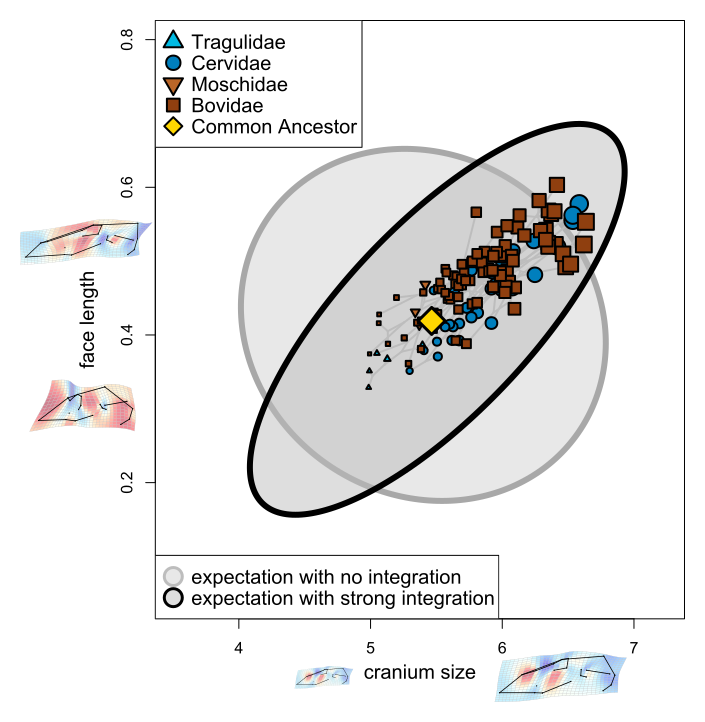

Research
Read more about my research here.
Learn moreAll mammals adhere to a common pattern of allometry, where larger (between species) and older (within an individual) mammals have proportionally longer faces. This pattern, CREA (CR-aniofacial E-volutionary A-llometry), necessarily limits the array of theoretically possible mammal skull forms since proportionally longer faces are limited to relatively larger mammals and vice versa (although there are exceptions). CREA provides a great opportunity to test how constraints at the population level confer macroevolutionary biases, since this pattern operates on both the individual and clade level. Accordingly, I'm leveraging an enormous dataset of ruminant skull morphologies to ask how CREA has influenced the diversification of skull form in ruminants (deer, cattle, antelope, goats, and relatives).
I've found considerable statistical support for the hypothesis that CREA is acting as a "line of least evolutionary resistance", which I will share with the field as a preprint & publication very soon. Along the way, I've developed some interesting (I think) evolutionary modeling tools to help us understand the relationship between morphological disparity & integration within a phylogenetic context as well as data visualization tools for visualization shape variation using thin-plate spline deformation grids.
Read more about my research here.
Learn moreI'm interested in using the hyperkinetic jaws of snakes as a model system to understand patterns of adaptation and constraint, and to develop morphometric techniques related to complex articulating anatomical structures.
Learn more
As an undergradate at Indiana University with David Polly I used computational fluid dynamic simulations and 3D geometric morphometric methods to understand form-function relationships in Late Ordovician brachiopods from the Cincinnati arch housed in the IU Paleo collection.
Learn more
An interactive R Shiny app to build theoretical mollusk shells.
The app